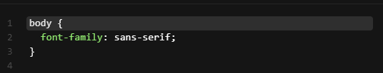
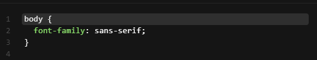
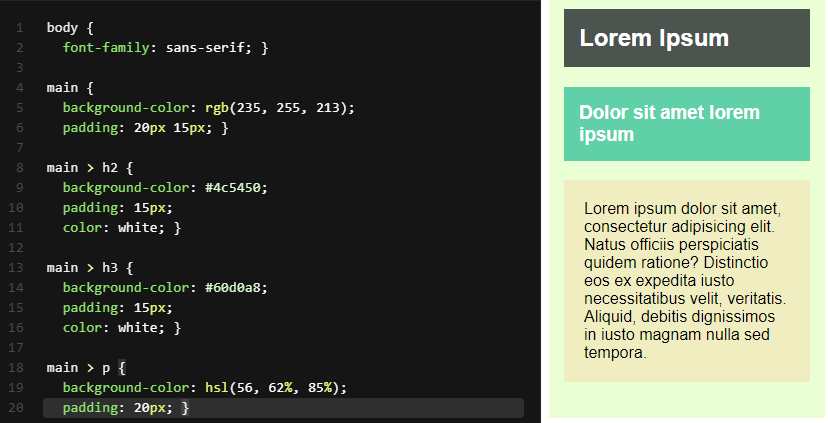
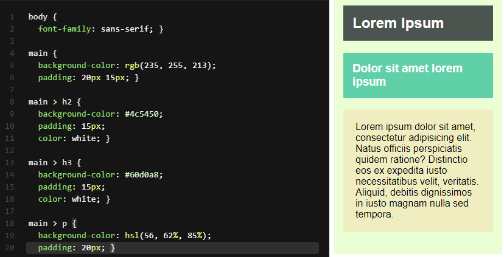

Pada modul sebelumnya, kita sudah mengetahui pengertian selector dan cara menggunakannya. Hal yang kita gunakan tersebut merupakan basic selector. Sebenarnya, ada beberapa macam lagi dari basic selector sebagai berikut.
Mari kita bahas satu per satu tipe basic selector tersebut
Type Selector menggunakan nama element sebagai target untuk diterapkannya rule. Dengan kata lain, ketika menggunakan selector ini tentu rule akan diterapkan pada seluruh element target yang ada pada dokumen HTML. Contoh sebagai berikut.

Class Selector menetapkan target element berdasarkan nilai dari atribut class yang diterapkan pada elemennya. Untuk penulisan selector-nya diawali dengan tanda titik (.) dan dilanjutkan dengan nama class-nya. Contohnya berikut
Class bersifat shareable sehingga dapat diterapkan pada banyak element dengan tipe element yang berbeda-beda. Misalnya sebuah class red dapat diterapkan pada element paragraf dan juga heading untuk menampilkan teks berwana merah.

Tidak hanya itu, sebuah element juga memungkinkan memiliki banyak nilai class sehingga kita dapat menerapkan lebih dari satu rule atau gabungan rule pada element target. Kita cukup menuliskan nama kelasnya dan dipisahkan dengan spasi untuk tiap kelasnya

Kita juga bisa menargetkan element secara spesifik yang memiliki sebuah class. Untuk melakukannya, kita tuliskan nama element target dan diikuti dengan titik (.) beserta nama kelasnya pada selector. Perhatikan contoh berikut.
ID Selector menetapkan targer element berdasarkan nilai dari atribut id yang diterapkan pada elemennya. Mirip dengan class, atribut id dapat diterapkan pada seluruh element HTML dan kebanyakan atribut ini digunakan untuk memberikan sebuah artikel arti pada generic element, seperti div dan span. Namun atribut id ini tidak bersifat shareable. Artinya, nilai id harus unik dan digunakan pada satu element saja.
Untuk menerapkan selector dengan menggunakan id, kita gunakan tanda octothorpe (#) atau lebih familiar disebut hash. Berikut contohnya.

Hal yang harus ditekankan lagi bahwa element id ini bersifat unik. Jika ingin menerapkan sebuah rule pada banyak element, sebaiknya mengguanakan atribut class.
Attribute selector merupakan cara menetapkan target element berdasarkan sebuah atribut yang digunakan atau bahkan bisa lebih spesifik dengan nilainya. Contoh sebagai berikut
Dari kode di atas, terlihat banyak sekali kondisi yang dapat diterapkan pada attribut selector. Agar dapat lebih mudah memahaminya, mari lihat tabel dibawah ini

Universal Selector digunakan untuk diterapkan pada seluruh element. Namun, selector ini juga bisa secara spesifik menargetkan sebuah element dengan menggabungkannya bersama selector yang lain. Berikut contohnya.

Adjacent Sibling Selector menggabungkan dua buah basic selector dengan menggunakan tanda + di antara keduanya. Contohnya berikut.

Adjacent Sibling Selector terdiri dari dua buah target element, tetapi hanya element kedua yang menerapkan rule selama element tersebut dituliskan langsung setelah element pertama pada berkas HTML. Kedua element itu harus berada di induk element yang sama


Mirip seperti Adjacent Sibling Selector, tetapi rules akan diterapkan pada seluruh element kedua yang berada setelah element pertama selama masih memiliki induk yang sama, walaupun posisi dari element kedua tidak berada tepat setelahnya. General Sibling Selector menggunakan simbol tilda (~) untuk menetapkan elemennya.
Rule di atas akan diterapkan pada element paragraf yang berada setelah element img selama masih di dalam induk yang sama.


Child Selector dan descendant selector merupakan dua ti;e combinators selector lainnya. Mari kita bahas satu per satu.
Child selector menggabungkan dua buah basic selector dengan menggunakan tanda greater than (>) di antara basic selectornya. Contohnya sebagai berikut
CSS rule akan diterapkan pada seluruh element paragraf yang berada dalam element div secara langsung. Dalam arti lain, element paragraf merupakan child dari element div, bukan hanya sebuah turunannya.


Descendant selector mirip seperti child selector, tetapi hierarkinya lebih luas karena rule akan diterapkan pada seluruh element yang menjadi turunannya walaupun secara tidak langsung. Basic Selector pertama yang dituliskan pada selector ini menggunakan spasi dalam menggabungkan dua basic selector.

Dalam contoh di atas, CSS rule akan diterapkan pada seluruh element paragraf yang merupakan turunan div


Selain beberapa selector yang sudah kita pelajari, CSS masih memiliki dua selector lagi yang dapat kita manfaatkan untuk membantu menyeleksi element dalam menerapkan sebuah rule, yakni pseudo-class dan pseudo-element. Sebelum menjelaskan lebih detail tentang kedua selector tersebut, perlu kita ketahui pseudo selector berbeda dari selector yang sudah dibahas sebelumnya. Selector ini menargetkan element pada bagian yang “tidak terlihat”, seperti sifat pada element sehingga untuk menetapkannya tidak bisa menggunakan selector biasa.
Pseduo-class merupakan sebuah class "semu" yang sebenarnya ada pada tiap element HTML. Pada contoh sebelumnya, kita sudah mengetahui salah satu pseudo-class selector. Dengan menggunakan selector ini kita dapat memilih element berdasarkan class yang tidak tampak pada dokumen. Kita bisa menetapkan rule hanya ketika sebuah tautan telah dikunjungi (:visited) atau ketika sebuah element diarahkan dengan kursor (:hover). Untuk menggunakan pseudo-class, kita gunakan tanda titik dua (:) pada basic selector dan diikuti dengan pseudo-class-nya.


Tidak hanya yang dicontohkan di atas, ada banyak sekali class semu yang menjadi standar pseudo-classes dalam CSS. Kita bisa melihat indeks standar yang ada pada pseudo-class dalam tautan resmi Mozilla
Sama seperti pseudo-class, pseudo-element merupakan sebuah element "semu" yang sebenarnya ada, tetapi tidak tampak secara tertulis di HTML. Selector ini biasa digunakan ketika kita ingin menambahkan konten tepat sebelum dan setelah sebuah element paragraf. Kita perlu menuliskan element/konten baru pada berkas HTML untuk menambahkan konten. Namun, kita dapat memanfaatkan pseudo-element untuk melakukannya. Pseudo-element yang dimaksud adalah ::before dan ::after
Konten yang dibuat dengan pseudo-element dituliskan pada CSS.


Untuk menggunakan pseudo-element, kita gunakan dua buah tanda titik dua (::) dan diikuti dengan nama pseudo-element-nya. Sebenarnya, kita bisa menggunakan sebuah karakter titik dua saja (:). Namun, kita perlu membedakannya dengan pseudo-class sehingga sebaiknya ketika menggunakan pseudo-element gunakanlah dua buah titik dua (::). Untuk mengetahui lebih lengkap mengenai berbagai macam pseudo-element, kita dapat melihat artikel Pseuod-elements yang ditulis oleh MDN
Perlu kita ketahui, CSS memisahkan styling untuk font dan teks. Kita harus tahu kapan seharusnya menetapkan styling pada font atau menetapkannya pada teks. Mengapa kedua hal tersebut dipisah, padahal teks dan font adalah satu kesatuan, ketika setiap teks pasti menggunakan font untuk menampilkannya? Hal ini karena pada CSS sendiri teks dan font mempunyai properti masing-masing.
Jika kita ingin menetapkan styling pada tampilan teks itu sendiri, gunakanlah properti font. Contohnya, properti font dapat mengatur tipe font, ukuran, ketebalan, dan lainnya. Sementara itu, properti teks digunakan untuk mendukung hal lainnya dalam menampilkan teks seperti menetapkan text alignment, dekorasi, spacing, dan masih banyak lagi. Sebab dua hal ini dipisah, mari kita membahasnya satu per satu.
Ketika kita membuat dokumen teks, termasuk dokumen cetak, langkah awal yang kita lakukan biasanya menentukan jenis font yang akan digunakan; pada pengembangan website pun demikian. Dalam CSS, font ditentukan menggunakan beberapa paket properti font yang dapat mengatur tipe font, ukuran, ketebalan, dan style. Berikut merupakan daftar properti font yang akan kita pelajari
Pada modul pengenalan CSS, kita sudah mencoba menggunakan font properties ini untuk mengubah standar font yang ditampilkan pada browser dengan menggunakan font-family pada elemen body.
 

Pada rule tersebut, kita mengubah standar font yang digunakan browser dengan font ‘sans-serif’. Sebenarnya untuk nilai dari properti ini dapat lebih dari satu (dikenal sebagai font font stack ), tujuannya adalah sebagai fallback jika terjadi kegagalan dalam menggunakan font yang kita gunakan. Berikut adalah aturan yang harus kita gunakan

Penjelasannya sebagai beikut.
Mungkin kita bertanya-tanya mengapa perlu memberikan lebih dari satu nilai pada font-family? Hal tersebut penting karena tidak semua browser mendukung semua jenis font. Jadi, menambahkan lebih dari satu nilai font dapat memberikann alternatif pada browser dalam menampilkan font jika font utama yang diterapkan tidak didukung oleh browser
Bagaimana urutan prioritasnya? Dimulai dari jenis font yang pertama dituliskan. Jika font pertama didukung oleh browser, ia akan digunakan. Jika tidak, lantas browser akan memeriksa nilai font yang kedua dan menggunakannya apabila didukung, begitupun selanjutnya.
Hal yang perlu kita perhatikan adalah pastikan untuk menggunakan generic font families pada akhir nilai properti font-family. Nilai ini dipastikan didukung oleh seluruh browser saat ini. Lantas, apa saja nilai dari generic font families ini? Berikut adalah nilai-nilai generic font families yang dapat kita gunakan untuk fallback mechanism.
Kita sudah mengetahui cara mengubah font pada website dan juga mengetahui tipe font standar yang tersedia pada browser. Berbicara tentang tipe font, tidak jarang kita menemukan website yang menggunakan font unik atau yang tidak dimiliki pada komputer kita ketika menjelajah beberapa website yang ada di internet. Lantas, bagaimana cara font tersebut dapat ditampilkan?
Untuk hal ini, CSS memiliki fitur yang digunakan untuk memasukkan font eksternal ke dalam CSS, yakni mengguanakan @font-face. Berikut adalah contoh penulisan @font-facepada CSS.
Setelah mendefinisikan font-face tersebut, ada nilai font-family baru bernilai "Dicoding Font" untuk diterapkan pada elemen HTML

Pada kelas ini, kita tidak akan membahas secara detail mengenai @font-face. Jika ingin mempelajarinya, Anda bisa mengunjungi dokumentasi yang diberikan oleh Mozilla terkait @font-face
Mengubah nilai font pada sebuah dokumen adalah hal yang sangat wajar terjadi, begitu pula pada website. Untuk menetapkan ukuran font, kita perlu menerapkan properti font-size dengan menetapkan nilai dari properti ini dengan menuliskan langsung nilai satuannya.
Hal yang kita perlukan adalah memperhatikan ketika menuliskan nilai adan satunnya. Pastikan tidak ada jarak (spasi) diantaranya.

Satuan dalam menetapkan ukuran font terbagi menjadi dua jenis.
Satuan yang nilainya tergantung pada suatu hal. Contohnya, ukuran viewport, induk elemen, atau ukuran teks standar.
Satuan yang nilainya telah ditentukan atau digunakan dalam dunia nyata.
Berikut adalah daftar satuan yang dapat kita manfaatkan dalam menetapkan ukuran font beserta fungsinya.
Relative Unit

Absolute Unit

Selain dengan menetapkan nilai dan satuanya secara langsung, kita juga bisa menggunakan nilai persentase untuk mengatur ukuran font.

Pada contoh di atas, ukuran font dari elemen h1 seharusnya memiliki ukuran 16px karena mewarisi dari induk elemennya (body). Namun, di bawahnya terdapat rule yang menargetkan secara spesifik untuk elemen h1 untuk menerapkan ukuran font sebesar 150% dari ukuran induknya. Dampaknya, elemen h1 akan tampak 50% lebih besar dari elemen lain yang ada di dalam body.

Hal yang terakhir, kita juga bisa menentukan ukuran font dengan menuliskan kata kunci secara spesifik yang tersedia pada CSS. Kata kunci tersebut : xx-small, x-small, small, medium, large, x-large, dan xx-large.
Kata kunci di atas tidak ada kaitannya dengan pengukuran tertentu (bukan ukuran yang absolute), tetapi nilainya diubah secara konsisten satu sama lain.

Pada gambar di atas, kita bisa lihat bahwa standarnya browser menampilkan teks dengan nilai medium. Properti font-size dapat diaplikasikan ke seluruh elemen yang ada di HTML dan nilainya dapat diturunkan pada elemen turunannya.
Setelah mengenal font families dan font size, selanjutnya ada juga font-weight yang digunakan untuk mengatur ketebalan dari font yang ditampilkan. Nilai dari properti ini dapat ditentukan dengan menggunakan numeric values (100 sampai 900) atau dengan menggunakan descriptive terms (normal, bold, bolder,dan lighter)

Properti selanjutnya adalah font-style, properti ini digunakan untuk menentukan postur dari teks yang ditampilkan, yakni bentuknya vertikal (normal) atau miring (italic dan oblique).

Italic dan oblique keduanya menampilkan teks yang miring. Perbedaannya adalah italic menerapkan tipe miring (italic font version) dari suatu font sedangkan oblique adalah font normal yang hanya dibuat miring.
Kita yang terbiasa dengan aplikasi document editor seperti Microsoft Word tentu tahu atau sudah mencoba fitur small caps. Fitur ini dapat membuat teks menjadi kapital tetapi dituliskan secara kecil dan merapat seperti berikut.


Menspesifikasikan masing-masing nilai properti font akan menghasilkan banyak sekali kode repetitif. CSS memiliki properti CSS yang biasa disebut dengan shorthand properti. Ia memberikan suatu “jalan pintas” untuk menuliskan properti-properti tersebut ke dalam satu properti, yaitu font. Dengan mengguanakan properti font, kita dapat menuliskan beberapa properti hanya dalam satu properti pada satu rule
Nilai dari properti font merupakan nilai seluruh properti dari font yang sudah kita bahas. Tiap nilai dipisahkan menggunakan spasi. Pada properti ini, urutan nilai merupakan hal yang penting sehingga jangan sampai salah urutan dalam menuliskannya.
Walaupun begitu, kita bisa tidak menuliskan seluruh nilai properti yang ada, tetapi nilai dari properti font-size dan font-family wajib ada ketika menggunakan properti ini. Berikut adalah contoh penulisan minimal ketika kita menggunakan properti font.

Properti line-height digunakan untuk mengatur jarak minimal dari garis dasar ke garis dasar dalam menampilkannya teks pada halaman. Jika kita terbiasa dengan software dokumen editor seperti Microsoft World, properti ini mirip dengan fungsi line height.
Pada penjelasan diatas disebutkan "minimal" karena jika terdapat sebuah karakter yang tinggi atau besar dalam sebuah baris, tinggi dari baris pun akan menyesuaikan agar jarak tetap mengakomodasinya. Berikut adalah contoh tiga cara berbeda dalam menerapkan tinggi baris dua kali lebih tinggi dari ukuran font.

Cara pertama merupakan cara yang paling mudah digunakan karena hanya menentukan nilai dengan satu angka. Konsepnya, angka tersebut nantinya dikalikan dengan nilai font-size sebelum diterapkan pada nilai properti line-height. Contohnya, ukuran font standar pada paragraf adalah 16 piksel dan kita definisikan properti line-height dengan nilai 2. Alhasil, seharusnya nilai properti line-height adalah 16 piksel * 2 = 32 piksel (dua kali lebih besar dari ukuran font).
Dalam membuat sebuah dokumen tidak jarang kita membutuhkan jarak/lekuk diawal paragraf, hal tersebut dapat dilakukan pada website dengan menerapkan properti text-indent. Kita dapat menentukan nilai properti ini melalui perhitungan panjang dalam px, em dan in atau bisa menggunakan nilai persentase (%). Nilai persentase dihitung berdasarkan lebar dari induk elemen.
Pada contoh ketiga kita bisa melihat bahwa pada nilai properti ini dapat diberikan nilai negatif. Jika kita menggunakannya, baris pertama pada paragraf akan keluar dari batas elemen yang menampungnya (biasa disebut hanging indent).

Perlu diingat kembali, properti ini hanya berpengaruh pada awal baris paragraf. Jika kita ingin menerapkannya untuk seluruh baris kita dapat gunakan margin atau padding, keduanya akan dibahas pada materi box model.
Kita bisa mengatur text alignment pada website seperti kita melakukannya pada aplikasi Microsoft Word dengan menggunakan properti text-align. Untuk standarnya, properti ini bernilai left atau biasa kita sebut rata kiri. Namun, standarnya bisa jadi menggunakan right atau rata kanan jika ada penerapan attribut languange dengan nilai bahasa yang arah bacanya berlawanan. Contohnya Arab.
Bagaimana dengan materinya? Pasti kita sudah familier dengan nilai-nilai tersebut, kan? Berikut adalah contoh penggunaan dari properti text-align.


Properti ini paling populer digunakan ketika kita ingin membuat garis bawah atau underline pada teks. Namun, tidak hanya itu, ada beberapa nilai lain yang dapat kita gunakan untuk properti ini, detailnya sebagai berikut

Dengan menggunakan text decoration, kita dapat menghilangkan efek underline pada link yang ditampilkan dengan memberikan nilai text-decoration : none pada elemen a.


Pasti kita pernah mencoba fitur pada document editor yang dapat mengubah kapitalisasi pada teks, fitur ini sangat membantu kala kita ingin mengubah kapitalisasi tanpa harus menuliskan kembali teksnya. Pada CSS juga terdapat fitur serupa, yaitu dengan menggunakan properti text-transform. Ketika kita menerapkan properti text-transform pada elemen teks, kapitalisasi akan berubah ketika halaman di-render tanpa harus mengubahnya pada dokumen HTML.

Berikut adalah contoh penerapan teks-transform

Properti selanjutnya yang bisa kita gunakan untuk memformat teks adalah letter-spacing dan word-spacing. Sebagaimana namanya, properti ini digunakan untuk mengatur spasi atau jarak pada teks. Properti letter-spacing digunakan untuk mengatur jarak antar huruf, sedangkan word-spacing digunakan untuk mengatur jarak antar kata.

Memberikan bayangan pada teks telah menjadi hal yang umum digunakan meskipun tidak memiliki dukungan disemua browser. Pada CSS, kita dapat gunakan properti text-shadow untuk membuat bayangan pada teks (atau bisa disebut drop shadow)
Nilai properti ini cukup rumit karena membutuhkan tiga buah nilai dan satu buah nilai warna sehingga membutuhkan empat nilai dalam satu properti untuk menentukan bayangannya
Berikut adalah contoh penggunaan dari properti text-shadow.

Warna memberikan kesan hidup pada sebuah website. Jika kembali pada tahun 1993, kita akan hidup ketika website hanya memiliki background berwarna abu dengan teks hitam. Bisa dibayangkan betapa membosankan tampilan tersebut, kan?
Gambar di atas merupakan tampilan halaman dari situs Yahoo sebagai mesin pencari pada tahun 1994, jika ingin melihat tampilan Yahoo lainnya dari tahun ke tahun, Anda dapat membuka tautan ini.
Pada saat itu, memang belum ada browser yang dapat mengatur perwarnaan hingga hadirnya Netsapce Navigator yang memungkinkan untuk melakukannya meskipun belum sesempurna saat ini. Syukurlah, kita cukup menggunakan properti-properti yang adan pada CSS untuk mengatur warna pada teks dan background pada saat ini. Terlebih, seluruh browser saat ini sudah mendukung styling menggunakan CSS sehingga kita tidak perlu memikirkan kompatibilitasnya.
Kali ini kita akan membahas tentang pewarnaan pada CSS. Tentunya, caranya dengan mengenal properti yang digunakan untuk mengatur warna teks dan background. Namun sebelum itu, mari kita pelajari dahulu cara menetapkan warna pada CSS.
Setiap warna pada layar komputer kita terdiri dari campuran warna. Layar komputer dibuat dari ribuan kotak kecil yang biasanya disebut piksel. Ketika layar monitor tidak menyala, piksel pun tidak akan menyala. Ketika layat monitor menyala, tiap piksel dapat menghasilkan warna yang berbeda sehingga dapat menampilkan gambar.
Dalam piksel terdapat tiga buah lampu kecil berwarna merah, hijau, dan biru. Semua warna dimulai dengan tiga warna tersebut, sehingga menjadi ribuan warna yang kita kenal sampai saat ini.

Ketika ingin menetapkan warna, kita tidak perlu menghafal kombinasi dari ketiga warna tersebut. Banyak cara untuk membantu kita dalam menetapkan warna yang kita inginkan. Contohnya seperti color picker yang ada dalam Photoshop. GIMP, atau Gravit Designer.
Kita bisa melihat nilai RGB yang dipilih melalui color picker. Lantas, bagaimana jika kita tidak memiliki aplikasi desain seperti yang telah disebutkan tadi? Tenang. sekarang color picker tersedia online, bahkan ketika kita menuliskan "color picker" pada Google Search, tools tersebut akan tersedia pada hasil pencariannya

Pada CSS, kita dapat menggunakan numeric value dan predefined color name untuk menetapkan nilai warna. Mari kita bahas satu per satu.
Penetapan warna menggunakan numeric value adalah cara yang paling banyak digunakan karena dengan menggunakannya, kita dapat menentukan warna yang kita inginkan dengan tepat. Terlebih dengan bantuan color picker, kita tidak perlu repot-repot memahami dengan mencari nilai kode warna secara manual. Berikut contoh penulisan nilai warna pada CSS dengan numeric value.

Kode tersebut merupakan nilai wanr hijau yang dituliskan dalam beberapa format. Dari kode tersebut, kita tahu tidak hanya format RGB yang dapat digunakan dalam menetapkan warna, Selain RGB ada format Hex dan HSL(Hue, Saturation, Light).
Selain menggunakan format angka, menentukan warna juga dapat menggunakan sebuah kata, seperti blue, yellow, red dan lainnya.
Dengan menggunakan kata, tenti kita dapat lebih mudah dan cepat dalam menentukan warna, tetapi mungkin hanya warna dasar yang dapat kita hafal. Sebab hampir seluruh browser saat ini mendukung 140 nama warna, kita dapat melihat apa saja warna yang tersedia pada pembahasan bertopik HTML color names dari w3schools.com.
Pada modul pengenalan CSS, sebetulnya kita sudah mencoba dengan mudahnya mengganti warna pada teks yang ditampilkan. Mungkin sebagian dari anda sudah mengetahuinya. Kita dapat dengan mudah mengganti warna teks menggunakan properti color.
Nilai properti color dapat berupa predefined color name atau sebuah numeric value dengan menggunakan RGB, RGBA, Hex, HSL, ataupun HSLA. Berikut contoh elemen p akan diberi warna abu-abu (gray) dengan menggunakan beberapa cara.
Properti color dapat diaplikasikan ke seluruh elemen yang ada dalam HTML dan lainnya dapat diturunkan pada elemen turunannya. Jadi kita bisa mengubah warna teks dalam seluruh dokumen HTML dengan menerapkan properti color pada elemen body.

CSS memperlakukan setiap eleme HTML seperti berada pada sebuah kota (kita akan tahu tentang ini pada pembahasan box model) dan properti background-color dapat mengatur warna untuk background dari kotak tersebut.
Sama seperti text color, kita dapat menspesifikasikan warna yang dipilih dari numeric values atau dengan predefined color name. Properti background-color akan bernilai transparan jika tidak kita tetapkan
Kebanyakan browser menetapkan nilai putih dalam nilai background-color, tetapi nilai tersrbut dapat pengguna ubah memalui pengaturan browser-nya. Jadi, untuk memastikan website kita memiliki tampilan background putih, kita dapat terapkan nilai background-color: white; pada elemen body. Kita juga bisa menetapkan pedding ketika menetapkan background-color untuk memberikan jarak antara konten dan pinggiran kotak elemen
 

Apakah Anda pernah melihat suatu objek atau gambar yang tak terlihat atau tembus pandang? Pada dunia nyata, Anda dapat menemukan objek yang memiliki sifat tersebut. Contohnya adalah plastik mika. Jika mengingat tugas makalah di sekolah, biasanya plastik mika dibutuhkan sebagai sampulnya. Kita lebih fokus untuk berbicara tentang bahannya yang terlihat transparan.
Kertas tersebut memiliki tingkat opacity tertentu. Bayangkan ia adalah sebuah elemen HTML. Satu lembar mika akan memiliki tingkat opacity lebih kecil sehingga transparansinya semakin tinggi. nilah konsep dari opacity. Makin tinggi tingkat atau nilai opacity maka makin besar kemungkinan elemen HTML akan terlihat.
Mungkin sebagian dari Anda ada yang bertanya, “Apa perbedaan antara transparan dan opacity?” Jawabannya, transparan adalah seberapa besar tingkat tembus pandang atau tak terlihatnya suatu objek, sedangkan opacity adalah seberapa besar tingkat terlihat suatu objek. Semakin besar tingkat transparansi suatu objek, semakin tak terlihat objek tersebut. Namun, semakin besar tingkat opacity suatu objek, semakin terlihat objek tersebut (solid).

Berikut adalah contoh penerapan opacity pada CSS.


Sebenarnya, opacity akan memberikan efek transparansi pada keseluruhan elemen, termasuk konten maupun child element di dalamnya. Ada kalanya, kita hanya ingin menerapkan opacity pada warnanya saja tanpa memberikan efek pada keseluruhan elemen.
Selain komponen warna-warna, CSS memiliki fitur bernama opacity yang dapat ditetapkan dalam warna. Ini merupakan komponen keempat setelah red, blue, dan green. Biasanya, ia disebut sebagai alpha channel. Untuk melakukannya, kita bisa menggunakan format warna RGBA, HSLA, dan Hex.
Berikut contoh penerapan alpha channel pada warna